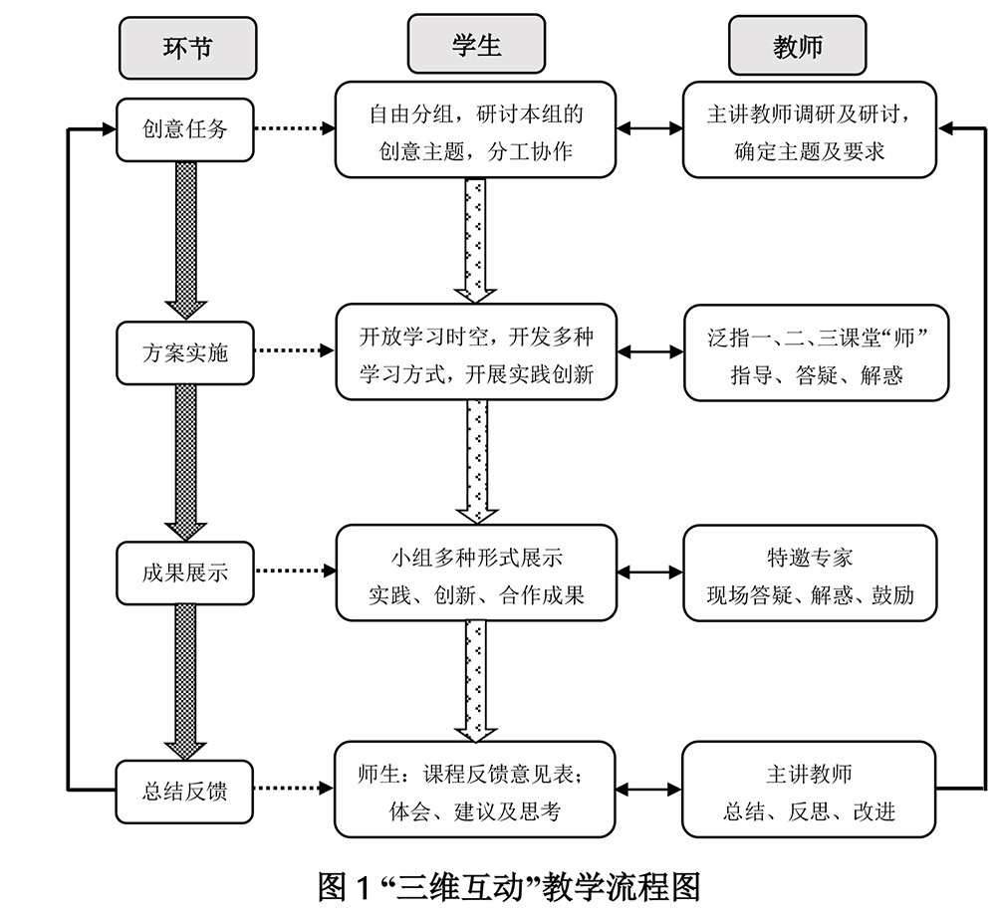

解决问题的方法
从一门课的课堂教学切入，以“三维互动”模式驱动教学与育人要素整合协同，全方位开放课堂时空，学生广泛参与，自由创意、创作，让学生在兴农创新研学中激发潜能，让学生在事农创业体验中感悟升华。小教学、大工程，小课堂、大舞台，自觉贯彻“五大”发展理念，学生多维发展、教学科研互促壮大，“以小博大”的教学育人效应充分彰显。
一、“三维互动”教学理念创构以系统、协同、生态理念为基础，统筹考虑影响学习的自然、社会和心理因素，突出强调教学系统中“教师与学生、教学与科研、创新与创业”六要素间合理互动、三维度间有效联动，同时根据活动特征和时空转换，把贯通联动的开放课堂时空划分为“三课堂”，即：第一课堂（教室：理论课堂）、第二课堂（校园：活动课堂）和第三课堂（社会：实践课堂），营造成“人人想学、时时可学、处处能学、人人为师、人人能创”的育人新生态。
二、“三维互动”教学模式建构（1）“三阶段”教学模式探索
依课堂时空开放，研讨主题深化拓展，教学模式探索依次历经了三个阶段：第一阶段（2002年）立足第一课堂，强化兴趣、提升自信；第二阶段（2003~2005、2007年）第一、二课堂结合，利用各类活动课堂资源，引导自主探索、开阔视野；第三阶段（2006、2008~2017年）走向第三课堂，激励兴农创新、事农创业。
（2）“四步骤”教学流程设计
四步骤实施流程（见图1）：酝酿确定创意任务；分小组开展基于三个课堂联动的课内外创意创作实践、协同完成创意任务；展示创新实践成果；总结与改进、感悟与升华。

（3）“三方面”教学机制创新
①“创意任务”驱动研学机制
创意任务包括科研、科教、科普、科创，体现创意、创作、创新、创业，激发学生能动性。
②“多维发展”过程评价机制
关注学生知识、思维、能力、态度、精神等多维发展，着力学业及未来持续发展。
③“协同共享”团队建设机制
学生间共享，师生间共享，与团队外部力量合作共享，师生教学相长。
三、“三维互动”教学育人改革示范与辐射保障（1）“教学与科研”互促
教学平台（团队、课程）层次提升，科研实力提升，协同育人动能充分释放。
（2）“开放与共享”支撑
课堂开放：由一课堂到二、三课堂，进而到学术活动共享交流；
教师共享：由单一到多学科、由一师到多师、由学校到各方专家共享支持；
资源共享：由书本到三课堂课程资源整合；
教学育人生态优化：由一门课辐射影响到系、院、校及全国同类高校，乃至影响整个高等农林教育系统，社会各方关注，形成全方位开放共享交流的新局面。
|